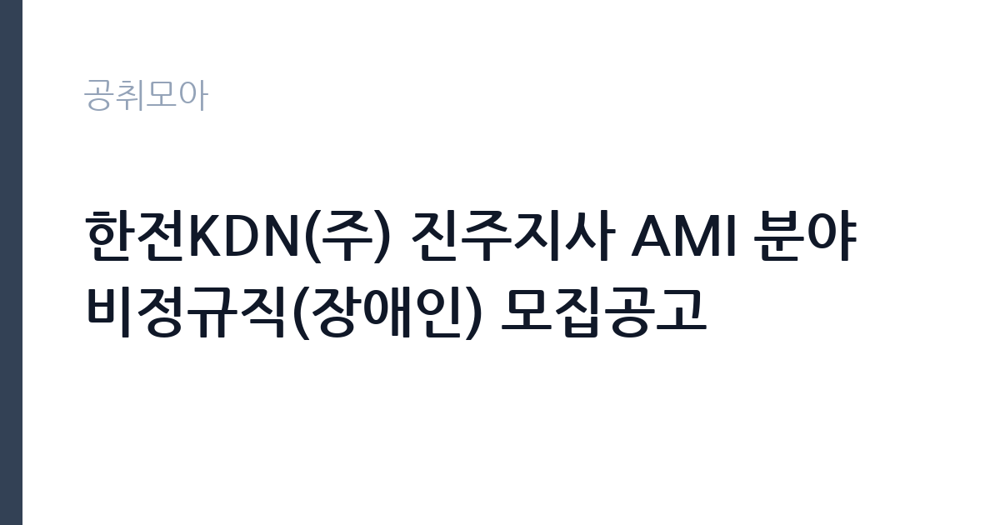

[공공기관] 한전KDN(주) 진주지사 AMI 분야 비정규직(장애인) 모집공고
한전KDN · 경남 · 마감 2026-10-06 (D-15) · 출처 잡알리오

한눈에 보는 모집 조건
| 기관 | 한전KDN |
|---|---|
| 공고명 | 한전KDN(주) 진주지사 AMI 분야 비정규직(장애인) 모집공고 |
| 고용형태 | 정규직 |
| 근무지 | 경남 |
| 게시일 | 2026-09-22 |
| 마감일 | 2026-10-06 (D-15) |
지원자격, 이렇게 읽으세요
- 공공기관 채용공시
- 세부 조건은 원문 공고문 확인
네 가지 요건을 모두 충족해야 한다. 장애인 복지카드, AMI 모뎀 작업 가능 여부, 기초안전보건교육, 운전 가능이 각각 필수다. 기초안전보건교육은 미이수자도 이수 가능하면 지원할 수 있으므로 교육 일정을 미리 잡아두는 것이 좋다. 운전면허는 소지만이 아니라 실제 운전 가능이 조건이므로, 장롱면허라면 현장 투입 전에 감각을 되찾아야 한다. 차량 보유 필요 여부는 원문 공고문에서 확인해야 한다.
이 공고의 포인트
전력 인프라 현장에 직접 들어가는 일자리라는 점이 특징이다. AMI 모뎀 설치는 한전의 지능형 검침망을 넓히는 실무로, 손기술과 고객 응대가 결합된 업무다. 장애인 전형이라 경쟁 풀이 한정되고, 진주 지역 근무라 경남 서부 거주자에게 출퇴근이 수월하다. 한전KDN 협력·위탁 현장 경력은 이후 전력·통신 현장직 지원의 밑거름이 된다.
전형은 어떻게 진행되나
전형은 서류전형과 면접전형으로 진행되는 것이 일반적이다. 서류에서는 네 가지 요건 충족 여부를 확인하고, 면접에서는 현장 투입 가능성과 안전의식을 평가한다. 운전 가능 여부는 면접에서 확인하거나 별도 검증이 있을 수 있다. 세부 전형과 제출 서류, 접수 방법은 원문 공고문에서 확인해야 한다.
원문에서 확인한 전형 방식
1. 장애인 복지카드 소지자 2. AMI분야 모뎀시설 및 점검 가능자 3. 건설업 기초안전보건교육 이수 또는 이수 가능자 4. 운전면허 소지자 및 운전 가능한 자
이런 분께 추천해요
- 장애인 복지카드를 소지하고 현장 근무가 가능한 사람
- 운전이 가능하고 가정 방문 설치 업무에 거부감이 없는 사람
- 진주·사천 등 경남 서부 거주로 출퇴근이 수월한 사람
지원 전 체크리스트
- 장애인 복지카드의 유효 상태를 확인한다
- 건설업 기초안전보건교육 이수증을 준비하거나 교육 일정을 잡는다
- 운전면허 상태와 실제 운전 가능 여부를 점검한다
- 접수 마감일(10월 6일)과 차량 보유 필요 여부를 원문에서 확인한다
모집 일정과 제출 타이밍
접수는 2026년 10월 6일에 마감된다. 이후 서류와 면접을 거쳐 10월 중 투입되는 흐름이 일반적이다. AMI 설치 물량이 계절과 사업 일정에 따라 움직이므로, 계약 기간과 연장 가능성은 원문 공고문의 근무조건 항목에서 확인해야 한다. 기초안전보건교육 미이수자는 합격 전후로 교육 일정을 맞춰야 한다.
직무 이해하기: 공공기관
AMI 작업자의 하루는 담당 구역 순회로 시작된다. 가정을 방문해 기존 전력량계에 통신 모뎀을 부착하고, 통신 연결 상태를 확인하며, 고장·분실 모뎀을 교체한다. 고객 댁을 방문하는 업무라 복장과 언행, 사전 안내가 중요하고, 작업 후에는 설치 실적을 시스템에 입력한다. 옥외 계량기와 옥내 설비를 오가며 사다리와 공구를 다루므로, 기초안전 수칙 준수가 생명줄이다.
자기소개서 작성 팁
지원 서류에서는 현장 적응력을 어필해야 한다. 배달이나 설치, 집수리 같은 방문·현장 업무 경험이 있다면 구체적으로 쓰는 것이 좋다. 운전 경력과 안전교육 이수 경험을 명시하고, 고객 응대에서 유의할 점을 한 문장으로 정리하면 직무 이해도가 드러난다. 장애인 전형이므로 작업 수행에 필요한 내용은 솔직하게 밝히는 것이 좋다.
면접 준비 포인트
면접에서는 현장 투입 가능 여부를 집중적으로 본다. 사다리 작업과 옥외 활동에 문제없는지, 고객 민원 상황에서 어떻게 대응할 것인지 묻는다. 운전 가능 여부는 거의 확실히 확인한다. 안전사고 예방에 대한 본인의 생각을 묻는 질문도 나오므로, 기초안전보건교육 내용을 복습하고 가는 것이 좋다.
급여·근무조건 읽는 법
정확한 보수액은 원문 공고문의 보수 항목에서 확인해야 한다. AMI 현장 비정규직은 일급 또는 월급 형태로 지급되고 출장·유류 관련 실비가 별도 정산되는 구조가 일반적이나, 이번 공고의 지급 방식과 금액은 원문에서 확인하기 바란다. 4대보험 적용 여부도 원문에서 확인해야 한다. 경쟁률과 합격선은 공개되지 않으므로 원문에서 확인해야 한다.
자주 묻는 질문
- AMI 모뎀 작업 경험이 없어도 되나요?
공고문은 모뎀 시설·점검 가능자를 조건으로 하므로, 유사 현장 경험이나 교육 이수 가능성을 기준으로 판단한다. 세부 인정 범위는 원문과 지사에 확인해야 한다. - 차량이 꼭 있어야 하나요?
운전면허 소지와 운전 가능이 명시 조건이다. 업무 차량 지급 여부와 자차 필요 여부는 원문 공고문에서 확인해야 한다. - 기초안전보건교육은 어디서 받나요?
건설업 기초안전보건교육은 안전보건공단 지정 교육기관에서 받을 수 있다. 미이수자도 이수 가능하면 지원할 수 있으나 교육 일정을 미리 잡아야 한다.
함께 보면 좋은 공고
[공공기관] 한국토지주택공사 개방형 직위(감사실장, 준법감시관) 공모 — 마감 2026-10-07[공공기관] 한국도로공사 비상임이사 공모 — 마감 2026-09-29[공공기관] 2026년 하반기 2차 중소벤처기업진흥공단 체험형 청년인턴(장애인) 채용 공고 — 마감 2026-10-12출처: 잡알리오 공개정보를 바탕으로 공취모아가 정리한 안내글입니다. 모집 조건·일정은 변경될 수 있으니 지원 전 반드시 원문 공고문을 확인하세요. 본 글은 정보 제공용이며 합격을 보장하지 않습니다.